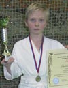
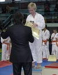
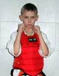
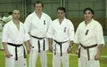
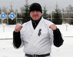
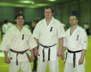
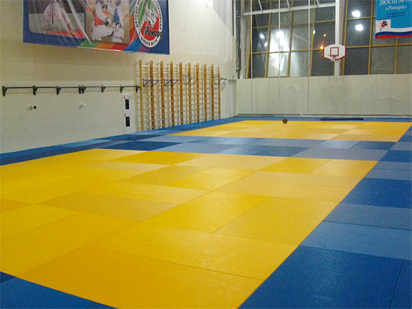

НОВОСТИ
6 марта бойцы нашего клуба принимали очередной вызов.
На этот раз этим вызовом оказался плановый аттестационный экзамен МГФКК.
Все ребята успешно сдали тест и повысили свою квалификацию. Результат :
11 Кю - Филяева Екатерина, Логунов Александр. 10 Кю - Алмакаев Руслан,
Шувалов Александр, Богачёв Антон, Богачёв Кирилл, Филяев Сергей. 9 Кю -
Дорохов Илья, Кудашев Алексей, Браславский Владислав. 8 Кю - Просветов
Евгений, Колиниченко Владимир. 7 Кю - Соловей Антон, Зайцев Сергей.
Хочется отметить ещё один момент - династический,так сказать.В этот раз
добрую традицию поддержала Екатерина Филяева,сестра Сергея
Филяева,которая выдержала экзамен и влилась в ряды настоящих каратистов.
Обращаю внимание,что все степени даются авансом и теперь ваша задача их оправдывать на каждой тренировке. Поздравлем!
26 февраля проходил Открытый чемпионат Москвы.4
человека из нашего клуба решили начать свой боевой путь с этого турнира.
В категории "Б" участие принимали Щекочихин Антон, Богачёв Антон и
Богачёв Кирилл. Особенно хочется отметить четвёртого участника -
Филиппова Сергея,выступавшего в соревнованиях ветеранов!!! Все ребята
подрались по одному бою,но главное они сделали - победили себя,а значит и
победы на татами не заставят себя ждать.Поздравлем!
Бои ребят вы можете посмотреть на Youtube
06.03.2011
C 17 по 20 февраля проводилась традиционная Зимняя
Школа.В этом году в ней приняли участие рекордное колличество участников
нашего клуба.Семь человек!!! Сборы прошли по непривычному
сценарию,половина людей,собравшихся сдавать экзамен,занималась
классическим кёкушинкай каратэ,а вторая половина осваивала Муай-Тай под
руководством президента Федерации Тайского бокса России. Надо
отметить,что тайский бокс легко "лёг" на движок каратэ и у ребят всё
хорошо получалось.
Про экзамен. В этот раз проходил аттестацию на чёрный
пояс инструктор нашего клуба Сергей Седенков. В течение 7-ми часов он с
остальными участниками дан-теста демонстрировал владение техникой каратэ
и умение вести поединки. В этот раз Сергею пройти аттестацию не
удалось. Надеюсь,что летом эта ступенька покорится нашему другу.
Некоторые моменты тренировок вы можете посмотреть на Youtube
05.12.2010
4 декабря прошёл первый в этом сезоне плановый экзамен МГФКК. В этот раз тест проходил по новым правилам,которые предъявляют более серьёзные требования как к физической так и к технической подготовке. Несмотря на это,все студенты нашего клуба,принимавшие участие в экзамене,прошли аттестацию и повысили свою квалификацию. Результаты: 11 кю - Богачёв К., Богачёв А.,Панкратов Е., Филяев С.,Михопаркин А; 10 кю - Окутин А., Дорохов И., Браславский В., Чернов В; 9 кю - Богданов Е., Колиниченко В., Куксов П., 8 кю - Геласимов Э. Поздравляем!
09.09.2010
С этого сезона к нашему клубу присоденияется ещё 1 группа.Теперь вы сможете потренироваться и в Москве:) Около метро Ясенево в прекрaсно оборудованном зале тренировки проводит Сергей Седенков. Так же с настоящего момента на сайте начинается публикация материалов московского филиала. Будьте внимательны,читая объявления.
18.08.2010
Итак,начинается новый сезон в нашем клубе. Детская группа в корп.1628 уже работает, взрослая группа начинает со 2 сентября. В этом году пробуем открыть детскую группу во Дворце единоборств. Предварительно она начнёт работать с октября, но всё будет зависеть от наполняемости. Теперь несколько новостей, касающихся взрослой группы. В связи с тем, что администрация подняла арендную плату в 3! раза, наши тренировки сокращаются до полутора часов и отменяются льготы, действовавшие в прошлом сезоне для тех, кто посещал не все тренировки. Стоимость тренировок остаётся прежней до конца 2010 года.
22.05.2010
22 мая состоялся аттестационный экзамен МГФКК, подводящий итог тренировочному сезону.Более 400 человек решили повысить свою квалификацию, в числе которых 10 спортсменов нашего клуба. Полные результаты экзамена будут размещены на сайте МГФКК. Поздравляем с суспешной сдачей Кю-теста: 11 Кю - Чернова В., Кочуева А. 10 Кю - Богданова Е., Ропай Н., Ловцова О.9 Кю - Ельцову О. 8 Кю - Маношкина М., Евсюкова А., Емельянова С., 6 Кю - Щекочихина А. За хорошую подготовку спортсменов к экзамену семпаям Морозовой Елене и Агееву Павлу выражается ОГРОМНАЯ благодарность:). Некоторые фоторафии можно посмотреть на сайте iko1.ru.
11.03.2010
7 марта в спорткомплексе "Красный Октябрь" прошёл турнир "Первый Шаг" для начинающих спортменов.В этом турнире приняли участие 3 воспитанника нашего клуба(тренер Морозова Е.). Несмотря на предпраздничный день турнир собрал бойцов не только из Москвы и области, но даже из совсем далёких регионов.Плотников Стас и Новгородов Лёня не заняли призовых мест,но показали хороший уровень подготовки. Поздравляем серебрянного призёра этого турнира Ропай Никиту. Надеемся, что турнир станет для ребят хорошим стимулом для улучшения своих тренировок.
|  |  |  |
{kind=link}
{kind=link}
{kind=link}
15.02.2010
С 11 по 14 февраля на базе МГФСО в г.Чехов Федерация Кёкусинкай Каратэ-до России проводила традиционную "Зимнюю Школу". Три человека от нашего клуба приняли участие- Морозов Алексей, Агеев Павел и Седенков Сергей.Хочу напомнить,что данное мероприятие наравне с "Летней Школой" является обязательным для старших учеников. Для сдачи экзамена на 2 Кю необходимо как минимум 3 таких семинара. В этом году также было положено начало новой традиции,а именно обязательный кросс на 20 км для всех сдающих Кю и Дан тесты и кросс на 30 км названный "Вызов пределам" для людей,желающих этот вызов бросить.
|  |  |  |
{kind=link}
{kind=link}
{kind=link}
Поздравлям Седенкова Сергея с успешной сдачей Кю-теста и присвоениев ему 1 Кю и Морозова Алексея,пробежавшего 30 км и получившего памятный знак "Вызов Пределам".
19.09.2010
С октября наша основная группа перезжает в прекрасный новый Дворец единоборств. Расположенный в самом центре "нового города", дворец располагает самой современной материальной базой и позволит спортсменам тренироваться с большей отдачей. Ждем всех желающих!

9.08.2010
Из Анапы вернулись наши ребята,участвовавшие в традиционном Летнем Лагере,который проводила Федерация Киокушинкай Каратэ России в посёлке Сукко. Неделе напряжённых тренировок подвёл итог квалификационный экзамен,в котором приняли участие Кудашев Иван и Никитина Настя. По результатам Кю-теста, длившегося больше 6 часов, нашим спортсменам была присвоена квалификация: Кудашев Иван - 7 Кю и Никитина Анастасия - 7 Кю. Поздравляем!!! За помощь в организации поездки и проведении тренировочного процесса сэмпаю Никитиной Наталье выражается особая благодарность с занесением в личное дело :) Ос!